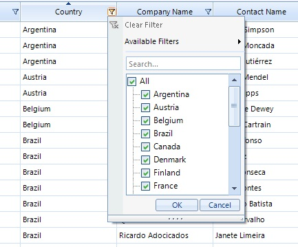
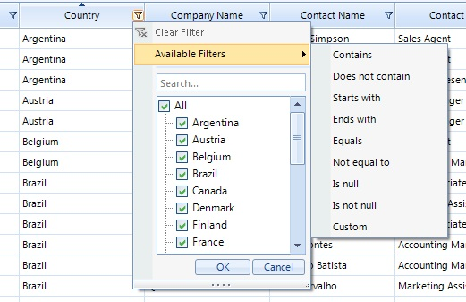
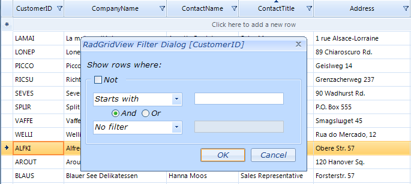

Excel-like filtering
Excel-Like filtering offers another way for filtering data in RadGridView by the end user. It is built in a way to mimic the
standard excel filtering functionality and offers a dialog, which contains a list with distinct column values, from which the
end user can chose.

In addition Excel-Like filtering supports the default filters available thorough “Available Filter” menu item and custom filter form.
Enabling the excel-like filtering is quite easy. You have to set the grid’s properties EnableFiltering and ShowHeaderCellButtons:
[C#] Enabling Excel-like filtering
this.radGridView1.EnableFiltering = true;
this.radGridView1.MasterTemplate.ShowHeaderCellButtons = true;
this.radGridView1.MasterTemplate.ShowFilteringRow = false;
[VB.NET] Enabling Excel-like filtering
Me.RadGridView1.EnableFiltering = True
Me.RadGridView1.MasterTemplate.ShowHeaderCellButtons = True
Me.RadGridView1.MasterTemplate.ShowFilteringRow = False
Note that ShowHeaderCellButtons property can be specified on grid templates level, and scenarios with mixed filter functionality on the
different hierarchy levels are possible. Also excel-like filtering will be synchronized with the previous filter row functionality if
ShowFilteringRow remains true.
After enabling the Excel-like filtering feature, you may decide that you do not
want it for a specific column. In this case you should set the
AllowFiltering property
of that column to false:
[C#]
this.radGridView1.Columns["ContactName"].AllowFiltering = false;
[VB.NET]
Me.RadGridView1.Columns("ContactName").AllowFiltering = False

Customizing Excel-like filtering popup
The FilterPopupRequired event is thrown just before filter popup showing.
It gives access to current filter popup through FilterPopup argument and
also allows setting up any custom made popup, which implements IGridFilterPopup interface.
Calendar filter popup
This popup allows convenient selection of specific date, or period. It will be shown for DateTime columns automatically
and by default it contains three custom menu items – “Today”, “Yestarday” and
“During last 7 days”. A customization of the custom items is possible through following methods:
ClearCustomMenuItems, AddCustomMenuItem and RemoveCustomMenuItem.
Here is how the default popup for DateTime column looks like:

The following code demonstrates how to clear the default custom items, and how to add your own item to this popup:
[C#]
void radGridView1_FilterPopupRequired(object sender, Telerik.WinControls.UI.FilterPopupRequiredEventArgs e)
{
if (e.FilterPopup is RadDateFilterPopup)
{
RadDateFilterPopup popup = (RadDateFilterPopup)e.FilterPopup;
popup.ClearCustomMenuItems();
popup.AddCustomMenuItem("today", new DateFilterDescriptor(e.Column.Name, FilterOperator.IsEqualTo, DateTime.Today));
}
}
[VB.NET]
Private Sub radGridView1_FilterPopupRequired(sender As Object, e As Telerik.WinControls.UI.FilterPopupRequiredEventArgs) Handles RadGridView1.FilterPopupRequired
If TypeOf e.FilterPopup Is RadDateFilterPopup Then
Dim popup As RadDateFilterPopup = DirectCast(e.FilterPopup, RadDateFilterPopup)
popup.ClearCustomMenuItems()
popup.AddCustomMenuItem("today", New DateFilterDescriptor(e.Column.Name, FilterOperator.IsEqualTo, DateTime.Today))
End If
End Sub
Here is how the customized popup looks like
Simple list filter popup
This popup allows easy and fast filtering based on simple list and one-click filter apply. It can be set up through FilterPopupRequired event
[C#]
void radGridView1_FilterPopupRequired1(object sender, Telerik.WinControls.UI.FilterPopupRequiredEventArgs e)
{
if (e.Column.Name == "ShipCountry")
{
e.FilterPopup = new RadSimpleListFilterPopup(e.Column);
}
}
[VB.NET]
Private Sub radGridView1_FilterPopupRequired1(sender As Object, e As Telerik.WinControls.UI.FilterPopupRequiredEventArgs) Handles RadGridView1.FilterPopupRequired
If e.Column.Name = "ShipCountry" Then
e.FilterPopup = New RadSimpleListFilterPopup(e.Column)
End If
End Sub

Grouped dates popup
This pop allows representation of date values grouped by year and month in a list. This simplifies the process of
selecting more than one filtering criteria based on month or year.
Note that if there are a lot of values, there will be performance impact of selecting items on higher level (as month and year) because a lot of FilterDescriptors will be applied simultaneously.
[C#]
void radGridView1_FilterPopupRequired2(object sender, Telerik.WinControls.UI.FilterPopupRequiredEventArgs e)
{
if (e.Column.Name == "OrderDate")
{
e.FilterPopup = new RadListFilterPopup(e.Column, true);
}
}
[VB.NET]
Private Sub radGridView1_FilterPopupRequired2(sender As Object, e As Telerik.WinControls.UI.FilterPopupRequiredEventArgs) Handles RadGridView1.FilterPopupRequired
If e.Column.Name = "OrderDate" Then
e.FilterPopup = New RadListFilterPopup(e.Column, True)
End If
End Sub

Customizing composite filter dialog
When you select an item from the “Available Filter” menu, a CompositeFilterForm is displayed. The CreateCompositeFilterDialog event is fired
just before the CompositeFilterForm is created. It allows you to create the default dialog and customize it or initialize
your own implementation of the composite filter dialog.
